library(e1071)
library(ggplot2)
set.seed(411)
coord <- matrix(rnorm(40), 20, 2)
colnames(coord) <- c("X1","X2")
y <- c(rep(-1,10), rep(1,10))
coord[y == 1, ] <- coord[y == 1, ] + 1
data <- data.frame(coord, y)
plot_svm<-ggplot(data = data, aes(x = X1, y = X2, color = as.factor(y))) +
geom_point(size = 6) +
theme_bw() +
theme(legend.position = "none")
data$y <- as.factor(data$y)Métodos supervisados: continuación
IND 163 - 2022/02
Eloy Alvarado Narváez
Universidad Técnica Federico Santa María
28/10/22
Máquina de vectores de soporte (SVM)
Esta metodología fue desarrollada en lo ’90 por la comunidad de ciencias computacionales. Consiste en la generalización de un clasificador llamado clasificador de máximo margen, que destaca por su simpleza, pero que en la práctica es difícil de utilizar debido a que requiere que las clases sean separables por un límite lineal.
Clasificador de máximo margen
Antes de definidir el clasificador de máximo margen, debemos introducir dos conceptos primordiales:
Hiperplano
Hiperplano de separación óptimo
Hiperplano
En un espacio \(p-\)dimensional, un hiperplano es un subespacio afín plano de dimensión \(p-1\). Por ejemplo, en dos dimensiones, un hiperplano es una linea. En tres dimensiones, un hiperplano es un subespacio 2-dimensional plano.
Matemáticamente, para el caso bidimensional, un hiperplano está definido por la ecuación:
\[ \beta_0+\beta_1 X_1 + \beta_2 X_2 = 0 \]
para parámetros \(\beta_0,\beta_1\) y \(\beta_2\). Naturalmente, la extensión a \(p\) dimensiones es:
\[ \beta_0+\beta_1 X_1 +\beta_2 X_2 + \dots + \beta_p X_p =0 \]
que define un hiperplano \(p-\)dimensional, en el sentido de que si un punto \(X=(X_1,X_2,\dots,X_p)^T\) en un espacio \(p-\)dimensional que satisface la ecuación anterior.
Figura hiperplano
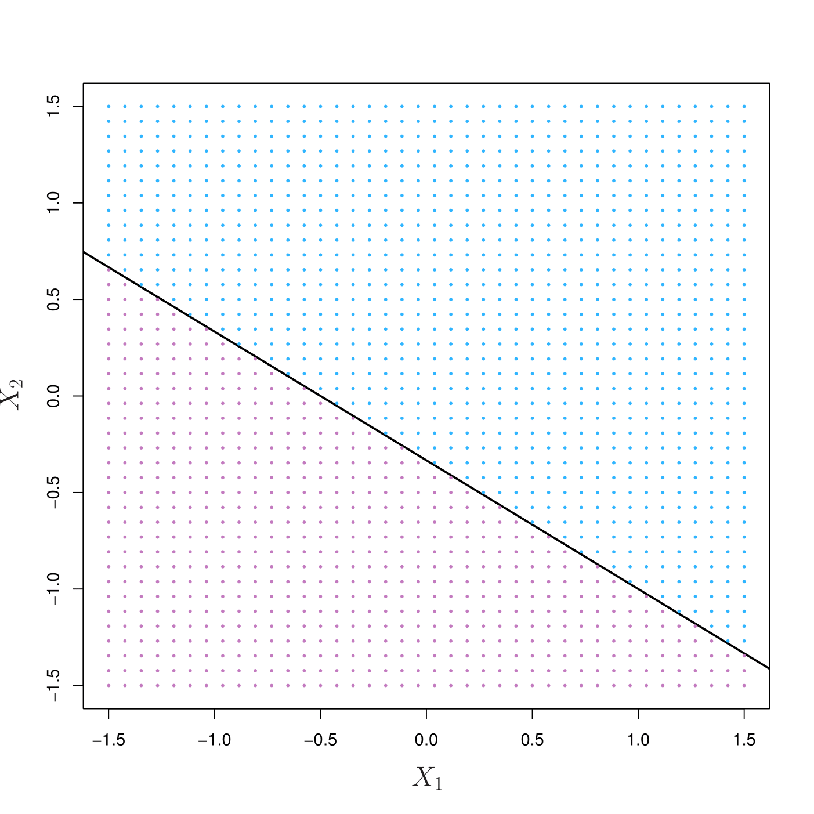Clasificando usando un hiperplano separable
Supongamos que tenemos una matriz de datos \(\mathbf{X}\) de tamaño \(n\times p\) que consiste en \(n\) observaciones de entrenamiento en un espacio \(p-\)dimensional,
\[ x_1=\begin{pmatrix}x_{11} \\ \vdots \\ x_{1p}\end{pmatrix} , \dots,x_n=\begin{pmatrix} x_{n1} \\ \vdots \\ x_{np} \end{pmatrix} \]
y que estas observaciones caen dentro de dos clases, esto es, \(y_1,\dots,y_n \in \{-1,1\}\) donde \(-1\) representa una clase y \(1\) la otra clase. También tenemos una observación de prueba, un \(p-\)vector de features observadas \(x^*=(x_{1}^{*}\, \dots \,x_{p}^{*})^T\)
Clasificando usando un hiperplano separable: continuación
Nuestro objetivo es desarrollar un clasificador basado en este conjunto de entrenamiento que clasifique correctamente la observación de prueba usando las variables medidas, para esto nosotros ya hemos visto varias metodologías que podríamos usar: LDA, QDA, árboles de decisión y regresión logística.
En lo que sigue veremos una metodología que se basa en el concepto de hiperplano separable.
Clasificando usando un hiperplano separable: continuación
Supongamos que es posible construir un hiperplano que separe las observaciones de entrenamiento perfectamente de acuerdo a sus clases. Por lo que si utilizamos las clase como antes (\(\{-1,1\}\)) se tendrá la propiedad que
\[ \beta_0+\beta_1 x_{i1} +\beta_2 x_{i2}+\dots+\beta_p x_{ip} > 0 \quad \text{si} \quad y_i=1 \]
y,
\[ \beta_0+\beta_1 x_{i1} +\beta_2 x_{i2}+\dots+\beta_p x_{ip} < 0 \quad \text{si} \quad y_i=-1 \]
equivalentemente, un hiperplano separable tiene la propiedad que:
\[ y_i(\beta_0 +\beta_0+\beta_1 x_{i1} +\beta_2 x_{i2}+\dots+\beta_p x_{ip})>0 \]
para todo \(i=1,\dots,n\).
Clasificando usando un hiperplano separable: continuación
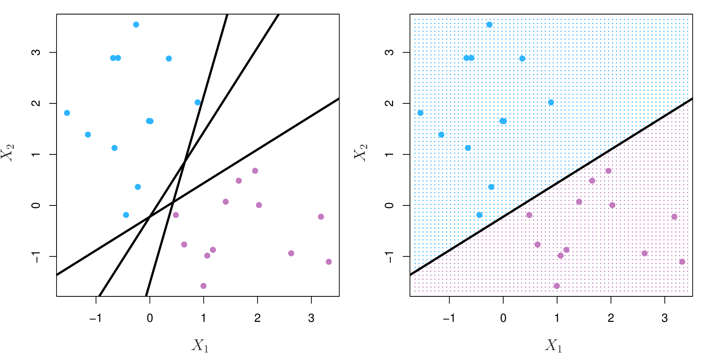Clasificando usando un hiperplano separable: continuación
Si un hiperplano separable existe, podemos usarlo para construir un clasificador bastante natural: una observación de prueba es asignada una clase dependiendo de que lado del hiperplano está ubicada.
Intuitivamente, podremos estar seguro de nuestra clasificación conforme la magnitud obtenida tras clasificar la observación de prueba.
Clasificador de margen máximo
En general, si nuestros datos pueden ser perfectamente separados un hiperplano, entonces existiran un infinito número de aquellos hiperplanos. Para poder construir un clasificador basado en un hiperplano separable, debemos encontrar una forma razonable de decidir cual de estos infinitos hiperplanos separables usar.
Una elección natural es el hiperplano de máximo margen (también conocido como hiperplano separable máximo), que es el hiperplano que está más lejos de las observaciones de entrenamiento. Esto es, podemos calcular la distancia (perpendicular) desde cada punto a un hiperplano separable dado; la menor de aquellas distancias es la mínima distancia entre las observaciones y el hiperplano, esta distancia es conocida como margen.
El hiperplano de margen máximo es el hiperplano separable en donde el margen es el más grande, esto es, es el hiperplano que tiene la distancia mínima más lejana a las observaciones de entrenamiento.
Luego, podemos clasificar una observación de prueba basado en que lado del hiperplano de margen máximo recae.
Vector de soportes
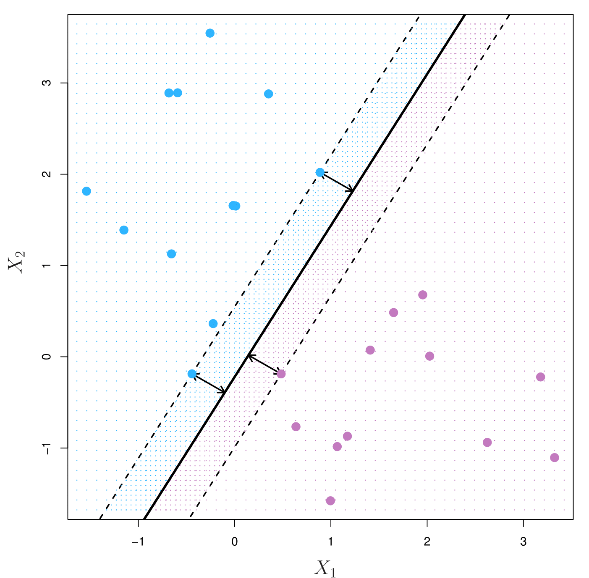Construcción de un clasificador de margen máximo
Ahora consideramos la tarea de construir el hiperplano de margen máximo basado en un conjunto de \(n\) observaciones de entrenamiento \(x_1,\dots, x_n \in \mathbb{R}^{p}\) y clases asociadas \(y_1,\dots,y_n \in \{-1,1\}\). En síntesis, este hiperplano es la solución de un problema de optimización dado por:
\[\begin{align*} &\max_{\beta_0,\beta_1,\dots,\beta_p} \quad M\\ &\text{ Sujeto a } \sum_{j=1}^{p} \beta_{j}^{2}=1 \\ &y_i(\beta_0 +\beta_0+\beta_1 x_{i1} +\beta_2 x_{i2}+\dots+\beta_p x_{ip})\geq M \quad \forall i=1,\dots,n \end{align*}\]Construcción de un clasificador de margen máximo: continuación
Construcción de un clasificador de margen máximo: continuación
mod_svm <- svm(formula = y ~ X1 + X2, data = data, kernel = "linear",
cost = 10, scale = FALSE)
summary(mod_svm)
Call:
svm(formula = y ~ X1 + X2, data = data, kernel = "linear", cost = 10,
scale = FALSE)
Parameters:
SVM-Type: C-classification
SVM-Kernel: linear
cost: 10
Number of Support Vectors: 8
( 4 4 )
Number of Classes: 2
Levels:
-1 1[1] 1 5 6 8 12 13 15 18Construcción de un clasificador de margen máximo: continuación
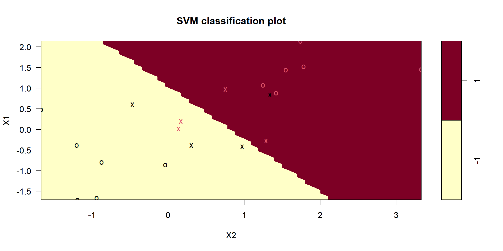Clasificador de vectores de soporte
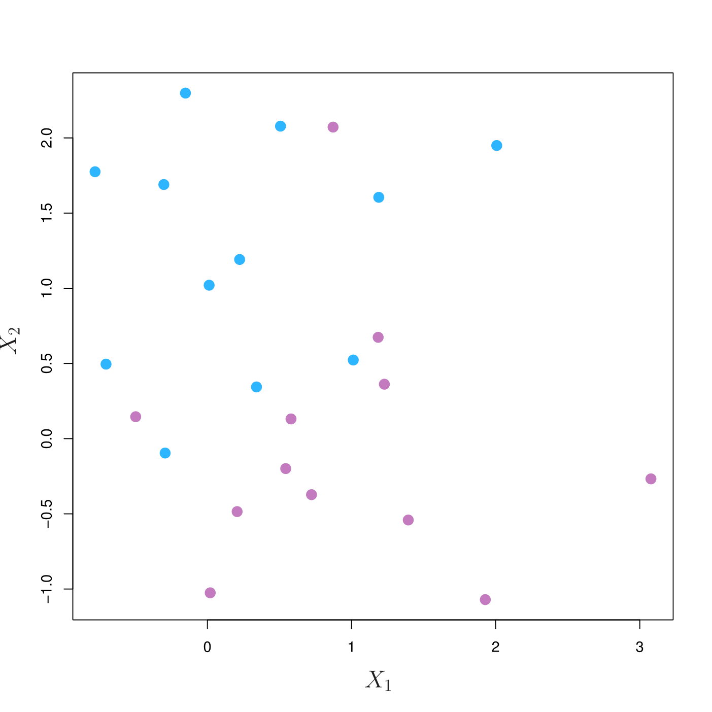Clasificador de vectores de soporte: continuación
En el caso anterior, un hiperplano separable no existe. En la figura siguiente, la adición de un solo dato provoca un cambio drástico en el margen máximo del hiperplano.
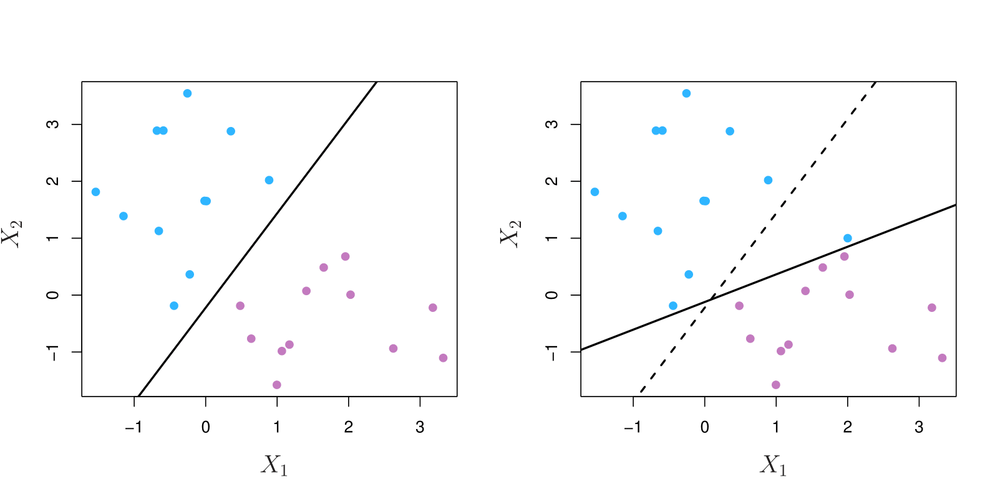Clasificador de vectores de soporte: continuación
Este cambio, reduce la confianza de la asignación de clases. Así, podemos concluir que nuestra metodología es extremadamente sensible a cambio, incluso de sólo una observación.
En estos casos, quizás deberíamos considerar un clasificador basado en un hiperplano que no separe perfectamente las dos clases, con el fin de:
Tener mayor robustez a las observaciones individuales
Tener mayor clasificación para la mayoría de las observaciones de entrenamiento
Clasificador de vectores de soporte: continuación
Así, podría ser beneficioso clasificar erróneamente un par de observaciones de entrenamiento para realizar un mejor trabajo clasificando el resto de las observaciones.
El clasificador de vectores de soporte (support vector classifier) o aveces llamado soft margin classifier, hace exactamente lo anterior; en vez de buscar el marger más grande tal que cada observación que clasifique perfectamente, permite que ciertas observaciones estén en la lado incorrecto del margen, o del lado incorrecto del hiperplano.
Clasificador de vectores de soporte: continuación
Matemáticamente, corresponde a la solución del siguiente problema de optimización:
\[\begin{align*} &\max_{\beta_0,\beta_1,\dots,\beta_p; \epsilon_1,\dots,\epsilon_n} \quad M\\ &\text{ Sujeto a } \sum_{j=1}^{p} \beta_{j}^{2}=1 \\ &y_i(\beta_0 +\beta_0+\beta_1 x_{i1} +\beta_2 x_{i2}+\dots+\beta_p x_{ip})\geq M (1-\epsilon_i) \quad \forall i=1,\dots,n \\ &\epsilon_i \geq 0, \sum_{i=1}^{n} \epsilon_i \leq C \end{align*}\]donde \(C\) es un parámetro de tunning no negativo. Cuando este parámetro es grande, habrá una gran tolerancia a que las observaciones están al lado incorrecto del margen (y por ende el margen será grande)
SVM
Support Vector Machine (SVM) o Maquina de vectores de soporte es una extensión del clasificador de vectores de soporte que se obtiene tras aumentar el espacio de variables de una manera específica: usando kernels.
En el caso del problema de optimización del clasificador de vectores de soporte, la solución involucra sólo productos internos de las observaciones (en contraste con las observaciones mismas).
SVM: continuación
El producto interno de dos \(r-\)vectores \(a\) y \(b\) se define como \(\langle a,b\rangle=\sum_{i=1}^{r} a_i b_i\). Por lo que el producto interno de dos observaciones \(x_i,x_{i'}\) está dado por:
\[ \langle x_i, x_{i'}\rangle=\sum_{j=1}^{p}x_{ij}x_{i'j} \]
Más precisamente, se puede mostrar que:
El clasificador de vectores de soportes lineal se puede representar como
\[ f(x)=\beta_0+\sum_{i=1}^{n}\alpha_i\langle x,x_i\rangle \]
donde hay \(n\) parámetros \(\alpha_i, i=1,\dots,n\), uno para cada observación de entrenamiento.
SVM: continuación
- Para estimar los parámetros \(\alpha_1,\dots,\alpha_n\) y \(\beta_0\), sólo necesitamos los \(\begin{pmatrix} n \\ 2 \end{pmatrix}\) productos internos \(\langle x_i,x_{i'}\rangle\) entre todos los pares de observaciones de entrenamiento. (esto es \(n(n-1)/2\) pares).
Supongamos que cada producto interno que hemos definido aparece en la representación del clasificador de vectores de soporte lineal, o en el cálculo del problema de optimización. Reemplazaremos este producto interno con una generalización de este, de la forma:
\[ K(x_i,x_{i'}) \]
donde \(K\) es una función que le llamaremos kernel.
SVM: continuación
Un kernel es una función que cuantifica la similitud entre dos observaciones. Por ejemplo, podemos tomar:
\[ K(x_i,x_{i'})=\sum_{j=1}^{p} x_{ij}x_{i'j} \]
que nos entregaría el clasificar de vectores de soporte. Lo anterior se dice que es un kernel lineal porque el lineal para las features. El kernel lineal esencialmente cuantifica la similitud de un par de observaciones usando la correlación de Pearson.
SVM: continuación
Alternativamente, podemos considerar otra forma de kernel, por ejemplo:
\[ K(x_i,x_{i'})=(1+\sum_{j=1}^{p} x_{ij}x_{i'j})^{d} \]
Este kernel es conocido como el kernel polinomial de grado \(d\), donde \(d\) es un entero positivo. Cuando este parámetro es mayor a 1, el clasificador de vectores de soportes tiende a tener un límite de decisión bastante más flexible.
SVM: continuación
Cuando el clasificador de vectores de soporte es combinado con un kernel no lineal (como el anterior), el clasificador resultante se conoce como support vector machine.
Otra opción popular de kernel es el kernel radial, que tiene la forma:
\[ K(x_i,x_{i'})=\exp(-\gamma \sum_{j=1}^{p}(x_{ij}-x_{i'j})^2) \]
donde \(\gamma\) es una constante positiva.
Figura SVM
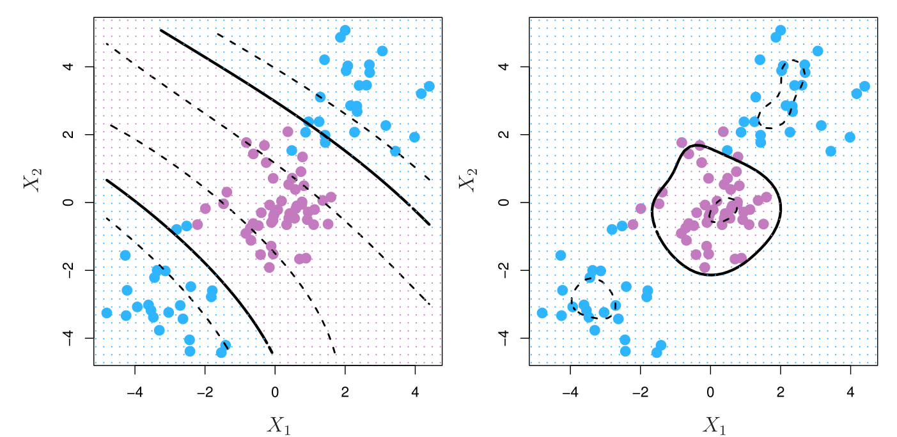Ejemplo
set.seed (411)
x=matrix(rnorm(200*2), ncol=2)
x[1:100,]=x[1:100,]+2
x[101:150,]=x[101:150,]-2
y=c(rep(1,150),rep(2,50))
dat=data.frame(x=x,y=as.factor(y))
plot_radial<-ggplot(dat) +
aes(x = x.1, y = x.2, colour = y) +
geom_point(shape = "circle", size = 1.5) +
scale_color_hue(direction = 1) +
theme_bw()Ejemplo: continuación
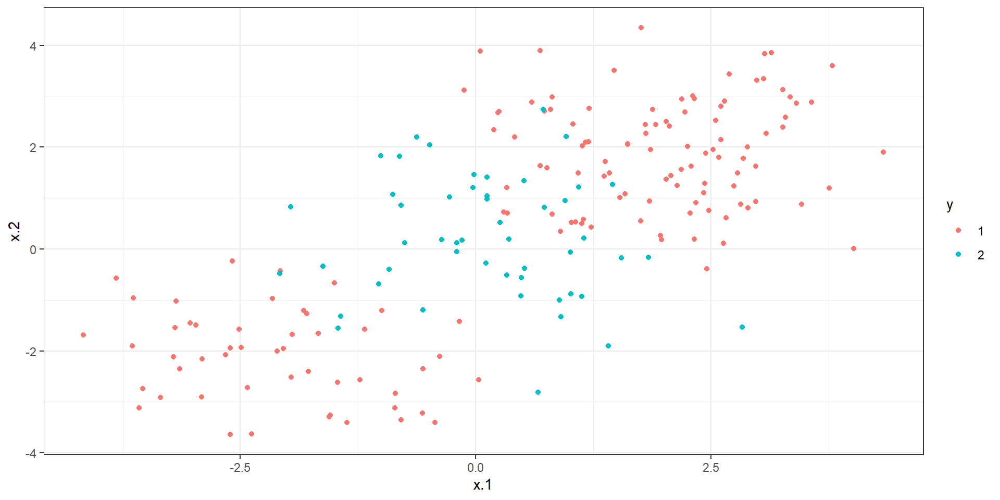Ejemplo: continuación
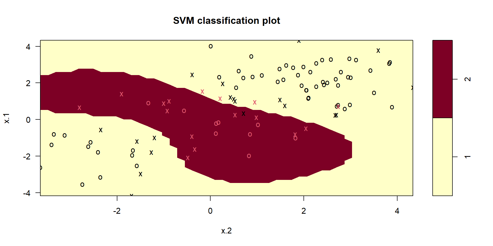Ejemplo: continuación
Ejemplo: continuación
library(caret)
confusionMatrix(table(true=dat[-train,"y"],pred=predict(svmfit, newdata=dat[-train,])))Confusion Matrix and Statistics
pred
true 1 2
1 68 7
2 9 16
Accuracy : 0.84
95% CI : (0.7532, 0.9057)
No Information Rate : 0.77
P-Value [Acc > NIR] : 0.05701
Kappa : 0.5616
Mcnemar's Test P-Value : 0.80259
Sensitivity : 0.8831
Specificity : 0.6957
Pos Pred Value : 0.9067
Neg Pred Value : 0.6400
Prevalence : 0.7700
Detection Rate : 0.6800
Detection Prevalence : 0.7500
Balanced Accuracy : 0.7894
'Positive' Class : 1
Métodos no supervisados
Como hemos mencionado antes, en los métodos no supervisados sólo tenemos las variables \(X_1,X_2,\dots,X_p\) medidas en \(n\) observaciones. No estaremos interesados en predecir, porque no tenemos una variable respuesta \(Y\) que esté asociada a nuestros datos. En cambio, nuestro objetivo será descubrir características interesantes de las variables medidas.
¿Hay alguna forma que nos entregue información de visualizar los datos?
¿Podemos encontrar subgrupos entre las variables u observaciones?
En lo que sigue nos concentraremos en 2 técnicas particulares: clustering y análisis de componentes principales.
Introducción
En general, realizar técnicas no supervisadas tiende a ser más difícil que realizar un método supervisado, pues no se tiene un objetivo claro para el análisis (como lo es predecir en el caso supervisado).
Usualmente, las metodologías no supervisadas se realizar como parte del análisis exploratorio de dato. Además, no existe un consenso en la mejor forma de evaluar las técnicas implementadas en datos de prueba. En el caso supervisados, podemos probar nuestro modelo creado con un conjunto de prueba, pero en el caso no supervisado no es posible debido a que no sabemos el respuesta verdadera.
Ejemplos de aplicación de estas metodologías son vastas:
Identificación de cáncer
Historiales de compras
Etc.
Análisis de componentes principales
El análisis de componentes principales nos permite resumir, ante un conjunto grande de variables correlacionadas, un subconjunto con menor número de variables representativas que colectivamente explican la mayoría de la variabilidad del conjunto original.
Además de producir variables que pueden ser usadas para métodos supervisados, PCA (por sus siglas en inglés, principal component analysis) sirve como herramienta para visualizar datos.
¿Qué son las componentes principales?
Supongamos que deseamos visualizar \(n\) observaciones con mediciones en un conjunto de \(a\) variables/características/features, \(X_1,X_2,\dots,X_p\), como parte de un análisis exploratorio de datos. Podemos examinar los gráficos bidimensionales de dispersión de los datos, que cada una contiene \(n\) mediciones de observaciones de 2 variables. Sin embargo, hay \(\begin{pmatrix} p \\ 2 \end{pmatrix}=p(p-1)/2\) de tales gráficos.
Por ejemplo, para \(p=10\) habrán 45 gráficos. Por lo que si, \(p\) es grande no nos será posible mostrarlos todos, y además ninguno de ellos será informativo debido a que sólo tienen un pequeña fracción del total de información disponible en los datos.
Así, necesitamos una mejor metodología para poder visualizar las \(n\) observaciones cuando \(p\) es grande.
¿Qué son las componentes principales?: continuación
En particular, quisieramos encontrar una presentación de baja dimensionalidad de los datos que capture la mayor cantidad de información posible. Por ejemplo, si podemos obtener un diagrama bidimensional de los datos que capture la mayoría de la información, entonces podemos graficar las observaciones en aquel espacio.
PCA nos entrega una herramienta para hacer justamento esto. Encuentra una representación de baja dimensionalidad del conjunto de datos que contiene la mayor variabilidad posible. La idea es que cada una de las \(n\) observaciones vive en un espacio \(p-\)dimensional, pero no todas estas dimensiones son igualmente interesantes.
¿Qué son las componentes principales?: continuación
PCA busca un pequeño número de dimensiones que sean lo más interesantes posibles, donde el concepto de interesante es medido por la cantidad que varían las observaciones en cada uno de las dimensiones.
Cada una de las dimensiones encontradas por PCA es una combinación lineal de \(p\) variables.
Ahora nos enfocamos en la manera en que PCA encuentra estas dimensiones o componentes principales.
¿Qué son las componentes principales?: continuación
El primer componente principal de un conjunto de variables \(X_1,X_2,\dots,X_p\) es la combinación lineal normalizada de las variables
\[ Z_1=\phi_{11}X_1+\phi_{21}X_2+\dots+\phi_{p1}X_p \]
que tenga la mayor varianza. Por normalizada, se refiere a que
\[ \sum_{j=1}^{p} \phi_{j1}^{2}=1. \]
Llamamos a los elementos \(\phi_{11},\phi_{2 1},\dots,\phi_{p1}\)reciben en el nombre de loadings y son los que definen a la componente. Así, estos elementos conforman el vector de loadings de los componentes principales \(\phi_1=(\phi_{11}\,\phi_{21}\dots\phi_{p1})'\)
¿Qué son las componentes principales?: continuación
Dado un conjunto de datos \(\mathbf{X}\) de tamaño \(n\times p\). ¿Cómo calculamos la primera componente principal?
Debido a que sólo estamos interesado en la varianza, asumiremos que cada variable de \(\mathbf{X}\) ha sido centrada en cero ( esto es, que las medias de las columnas sean cero). Luego, buscamos la combinación lineal de las variables medidas con forma:
\[ z_{i1}=\phi_{11}x_{i1}+\phi_{21}x_{i2}+\dots+\phi_{p1}x_{ip} \]
que tenga la mayor varianza muestral, sujeto a la restricción que \(\sum_{j=1}^{p} \phi_{j1}^{2}=1\). En otras palabras, el vector de loadings de la primera componente principal resuelve el siguiente problema de optimización:
\[ \max_{\phi_{11},\dots,\phi_{p1}}\Bigg\{ \dfrac{1}{n}\sum_{i=1}^{n} \left( \sum_{j=1}^{p} \phi_{j1}x_{ij}\right)\Bigg\} \text{ sujeto a }\sum_{j=1}^{p}\phi_{j1}^2=1 \]
Reproducibilidad de las componentes
El proceso de PCA genera siempre las mismas componentes principales independientemente del software utilizado, es decir, el valor de los loadings resultantes es el mismo.
La única discrepancia que podría suceder es que los signos estén invertidos, pues los loadings determinan la dirección de la componente.
Influencia de outliers
Al trabajar con varianzas, el método PCA es altamente sensible a outliers, por lo que es altamente recomendable estudiar si los hay. La detección de valores atípicos con respecto a una determinada dimensión es algo relativamente sencillo de hacer mediante comprobaciones gráficas.
Las técnicas diagnóstico de datos anómalos escapa de los objetivos del curso, pero son estudiados en análisis multivariado o modelos lineales (dentro del contexto de regresión)
Proporción de varianza explicada
Una de las preguntas más frecuentes que surge tras realizar un PCA es: ¿Cuánta información presente en el set de datos original se pierde al proyectar las observaciones en un espacio de menor dimensión? o lo que es lo mismo ¿Cuanta información es capaz de capturar cada una de las componentes principales obtenidas? Para contestar a estas preguntas se recurre a la proporción de varianza explicada por cada componente principal.
Asumiendo que las variables se han estandarizado para tener media cero, la varianza total presente en el set de datos se define como:
\[ \sum_{j=1}^p Var(X_j) = \sum_{j=1}^p \dfrac{1}{n} \sum_{i=1}^n x^{2}_{ij} \]
Proporción de varianza explicada: continuación
y la varianza explicada por la componente \(m\) es:
\[ \dfrac{1}{n} \sum_{i=1}^n z^{2}_{im} = \dfrac{1}{n} \sum_{i=1}^n \left( \sum_{j=1}^p \phi_{jm}x_{ij} \right)^2 \]
Así, la proporción de varianza explicada por la componente \(m\) viene dada por
\[ \dfrac{\sum_{i=1}^n \left( \sum_{j=1}^p \phi_{jm}x_{ij} \right)^2} {\sum_{j=1}^p \sum_{i=1}^n x^{2}_{ij}} \]
Esta proporción y su forma acumulada (a lo largo de las componentes) nos entrega información crucial a la hora de elegir cuantas componentes principales utilizar en nuestro análisis.
Número óptimo de componentes principales
Por lo general, dada una matriz de datos de dimensiones \(n \times p\), el número de componentes principales que se pueden calcular es como máximo de \(\min\{n-1,p\}\). Sin embargo, siendo el objetivo del PCA reducir la dimensionalidad, suelen ser de interés utilizar el número mínimo de componentes que resultan suficientes para explicar los datos.
No existe una respuesta o método único que permita identificar cual es el número óptimo de componentes principales a utilizar. Una forma de proceder muy extendida consiste en evaluar la proporción de varianza explicada acumulada y seleccionar el número de componentes mínimo a partir del cual el incremento deja de ser sustancial.
Número óptimo de componentes principales: continuación
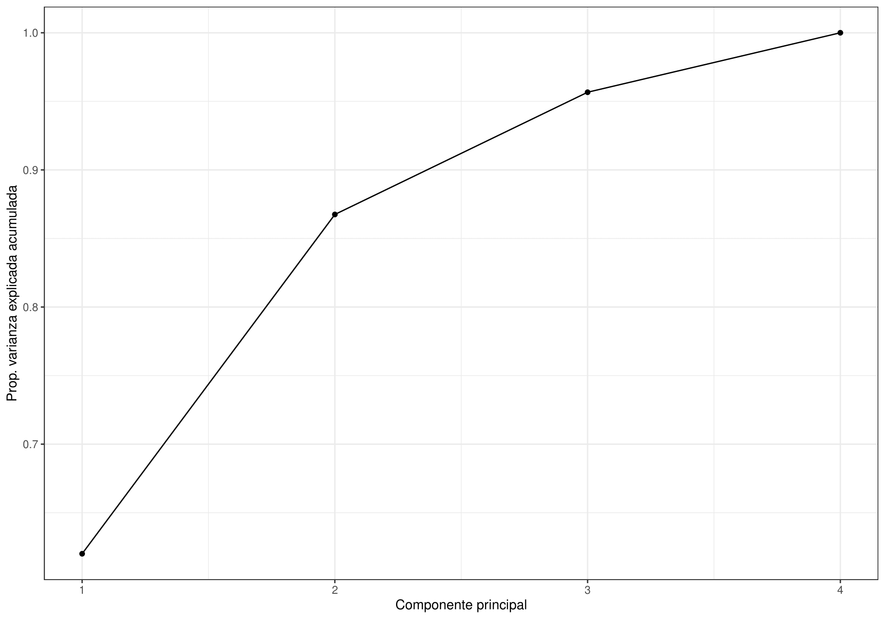Ejemplo
Datos del porcentaje de asaltos, asesinatos y secuestros por cada 100 mil habitantes para cada uno de los estos de US, en el año 1973. Adicionalmente, se incluye el porcentaje de la población de cada estado que vive en zonas rurales.
Murder Assault UrbanPop Rape
Alabama 13.2 236 58 21.2
Alaska 10.0 263 48 44.5
Arizona 8.1 294 80 31.0
Arkansas 8.8 190 50 19.5
California 9.0 276 91 40.6
Colorado 7.9 204 78 38.7 Murder Assault UrbanPop Rape
7.788 170.760 65.540 21.232 Murder Assault UrbanPop Rape
18.97047 6945.16571 209.51878 87.72916 Si no estandarizamos, la variable Assault será la que dominará nuestro PCA.
Ejemplo: continuación
[1] "sdev" "rotation" "center" "scale" "x" Murder Assault UrbanPop Rape
7.788 170.760 65.540 21.232 Murder Assault UrbanPop Rape
4.355510 83.337661 14.474763 9.366385 PC1 PC2 PC3 PC4
Murder -0.5358995 0.4181809 -0.3412327 0.64922780
Assault -0.5831836 0.1879856 -0.2681484 -0.74340748
UrbanPop -0.2781909 -0.8728062 -0.3780158 0.13387773
Rape -0.5434321 -0.1673186 0.8177779 0.08902432Elementos center y scale contienen la media y desviación en escala original.
Elemento rotation contiene el valor de los loadings para cada componente
Ejemplo: continuación
Valor de las componentes principales para cada observación (principal component scores)
PC1 PC2 PC3 PC4
Alabama -0.9756604 1.1220012 -0.43980366 0.154696581
Alaska -1.9305379 1.0624269 2.01950027 -0.434175454
Arizona -1.7454429 -0.7384595 0.05423025 -0.826264240
Arkansas 0.1399989 1.1085423 0.11342217 -0.180973554
California -2.4986128 -1.5274267 0.59254100 -0.338559240
Colorado -1.4993407 -0.9776297 1.08400162 0.001450164[1] 50 4Ejemplo: continuación
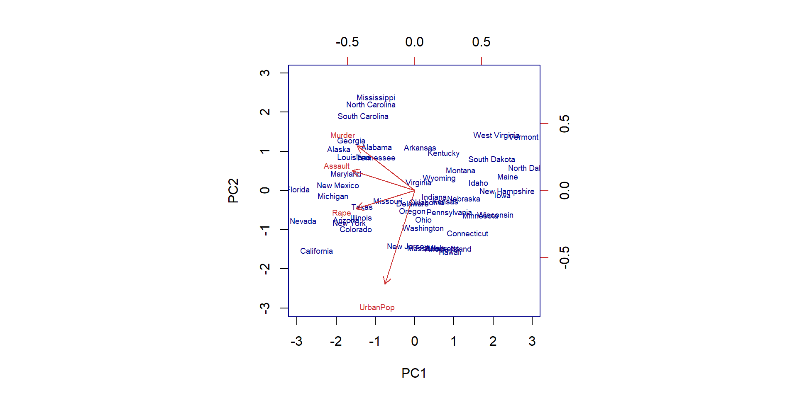Ejemplo: continuación
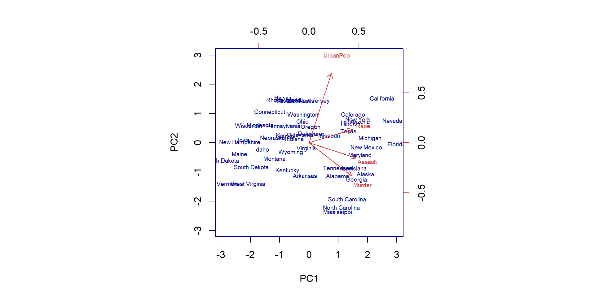Ejemplo: continuación
[1] 2.4802416 0.9897652 0.3565632 0.1734301[1] 0.62006039 0.24744129 0.08914080 0.04335752Ejemplo: continuación
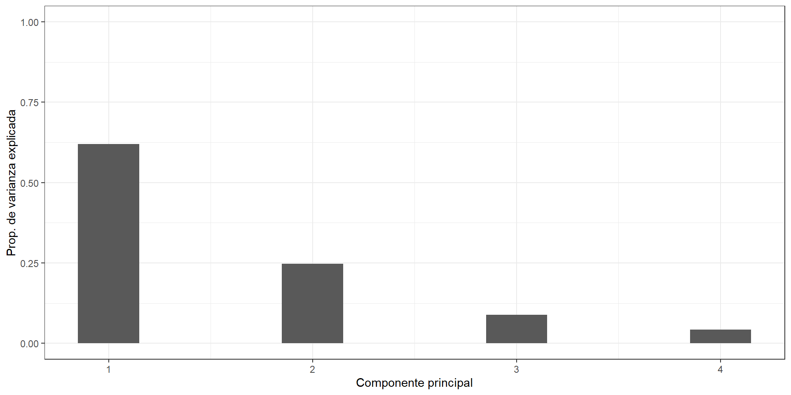Ejemplo: continuación
[1] 0.6200604 0.8675017 0.9566425 1.0000000Ejemplo: continuación
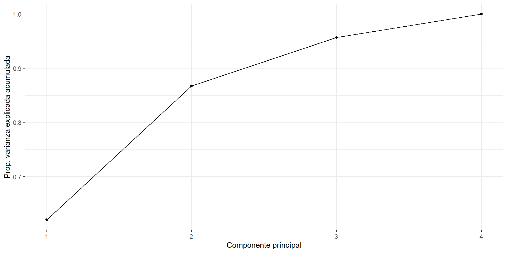Métodos de agrupamiento
Los métodos de agrupamiento o clustering hacen referencia a un conjunto de técnicas que tienen por finalidad encontrar subgrupos o clusters en un conjuntos de datos dado. Al separar en grupos las observaciones que componen un conjunto de datos, interpretamos que los elementos en un mismo grupo son más similares entre sí que con los de otros grupos.
Lo anterior, naturalmente provoca la interrogante ¿Qué se considera que dos datos sean similares o distintos?
Generalmente, responder a esta pregunta frecuentemente requiere tener consideraciones sobre el dominio o naturaleza de los datos en estudio.
Métodos de agrupamiento: continuación
Por ejemplo, supongamos que tenemos un conjunto de \(n\) observaciones, cada una con \(p\) features. Las \(n\) observaciones podrían corresponder a muestras de tejido de pacientes con cáncer de mamas, y las \(p\) características podrían corresponder a las mediciones recogidas desde cada tejido; mediciones clínicas, mediciones sobre la expresión de genes, etc.
Podríamos tener alguna razón para creer que existe alguna tipo de heterogeneidad entre las \(n\) muestras de tejidos; por ejemplo, quizás existen algunos sub-tipos diferentes de cáncer de mama. En este caso, las técnicas de agrupamiento podrían ser utilizadas para encontrar estos subgrupos.
Métodos de agrupamiento: continuación
Este es un problema no-supervisado debido a que estamos tratando de descubrir la estructure en base a un conjunto de datos. Las técnicas de PCA y clustering buscan simplificar los datos a través de un pequeño número de abstracciones, pero sus mecanismos son diferentes:
PCA busca encontrar una representación de dimensión baja de las observaciones que expliquen una gran parte de la varianza.
Los métodos de agrupamiento buscan encontrar subgrupos homogéneos entre las observaciones.
Debido a que la popularidad y uso de agrupamientos, existen un gran número metodologías de clustering. Nos concentraremos un particularmente dos, K-medias y agrupamiento jerárquico
Medidas de distancia
Todos los métodos de clustering tienen una cosa en común, para poder llevar a cabo las agrupaciones necesitan definir y cuantificar la similitud entre las observaciones. Dentro de este contexto, cuantificaremos aquella similitud usando distintos tipos de distancia entre las observaciones, debido a que en principio podemos escoger cualquier tipo de distancia, hace a esta metodología bastante flexible.
Distancia euclidiana
Para un espacio euclidiano \(n-\)dimensional definimos la distancia euclidiana entre dos puntos \(p=(p_1,p_2,\dots,p_n)\) y \(q=(q_1,q_2,\dots,q_n)\) como la cantidad:
\[d_{euc}(p,q)\sqrt{(p_1-q_1)^2+(p_2-q_2)^2+\dots(p_n-q_n)^2}=\sqrt{\sum_{i=1}^n (p_i-q_i)^2}\]
Elevar esta distancia al cuadrado permite dar más peso a aquellas observaciones que están más alejadas.
Distancia de Manhattan
La distancia de Manhattan, también conocida como taxicab metric o distancia \(L^1\), define la distancia entre dos puntos \(p\) y \(q\) como la sumatoria de las diferencias absolutas entre cada dimensión. Esta medida es menos sensible a datos anómalos que la distancia euclidiana.
En este tipo de distancia existen múltiples caminos para unir dos puntos con el mismo valor de distancia de Manhattan, ya que su valor es igual al desplazamiento total en cada una de las dimensiones. Esta distancia está definida como:
\[d_{man}(p,q)=\sum_{i=1}^{n}|(p_i-q_i)|\]
Distancia de Manhattan: continuación
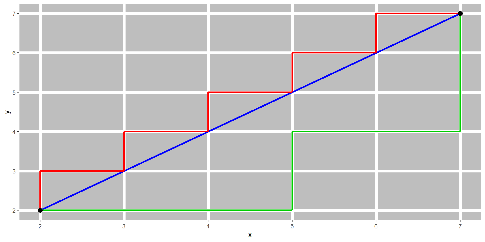Correlación
La correlación es una medida de distancia muy útil cuando la definición de simulitud se hace en términos de patrón o forma y no de desplazamiento o magnitud ¿Qué quiere decir esto?
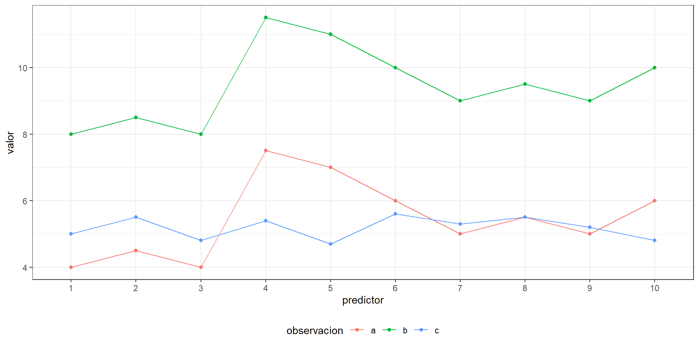Correlación: continuación
La correlación la definimos como:
\[d_{cor}(p,q)=1-\text{correlación}(p,q)\]
Según esta definición, tendremos que a una correlación de magnitud 1, la similitud o distancia será cero, y por tanto las consideraremos iguales.
Existen más distancias que podemos ocupar, entre ellas Jackknife correlation,Simple matching coefficient (para datos binarios), índice Jacard, distancia coseno, entre otras.
K-medias
El método de K-medias o \(K-means\) agrupa las observaciones en \(K\) grupos distintos donde \(K\) se determina antes de realizar el análisis. Una vez definido el valor de \(k\), esta metodología encuentra los \(k\) mejores clusters, entendiendo como mejor cluster aquel cuya varianza interna (varianza intra-cluster) sea lo más pequeña posible.
Así, este método es un problema de optimización, en el que se reparten las observaciones en \(K\) clusters de forma que la suma de las varianzas internas de todos ellos sea la menor posible. Esto requiere definir un modo de cuantificar la varianza interna.
K-medias: continuación
Consideremos \(C_1,\dots,C_k\) como los conjuntos formados por los índices de las observaciones de cada uno de los clusters. Esto es, \(C_1\) contiene los índices de las observaciones agrupadas en el cluster 1. Para indicar la pertenencia de una observación a un cluster particular es \(i\in C_k\). Todos estos conjuntos satisfacen las siguientes dos propiedades:
- \(C_1 \cup C_2 \dots \cup C_k=\{1,\dots,n\}\)
- \(C_k \cap C_{k'}=\emptyset\)
Dos medidas frecuentemente utilizadas para definir la varianza interna de cada cluster \(W(C_k)\) son:
- \(W(C_k)=\sum_{x_i\in C_k} (x_i-\mu_k)^2\)
- \(W(C_k)=\dfrac{1}{|C_k|}\sum_{i,i'\in C_k}\sum_{j=1}^{p}(x_{ij}-x_{i'j})^2\)
Minimizar la suma total de la varianza interna \(\sum_{k=1}^{K}W(C_k)\) de forma exacta (encontrar un mínimo global) es un proceso complejo debido a la inmensa cantidad de formas en las que \(n\) observaciones se pueden dividir en \(K\) grupos. Sin embargo, es posible obtener una solución que si bien no es la óptima, nos entrega un óptimo local.
K-medias: continuación
El algoritmo empleado en este caso es:
- Asignar aleatoriamente un número entre 1 y \(K\) a cada observación. Esto sirve como asignación inicial aleatoria de las observaciones a los clusters.
- Iterar los siguientes pasos hasta que la asignación de las observaciones de los clusters no cambie o se alcance un número máximo de iteraciones preestablecido.
- Para cada uno de los clusters calcular su centroide (centro de gravedad)
- Asignar cada observación al cluster cuyo centroide está más próximo.
Este algoritmo garantiza que, en cada paso, se reduzca la intra-varianza total de los clusters hasta alcanzar un óptimo local.
Figura: K-medias
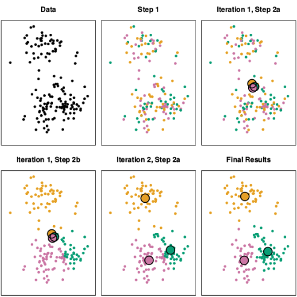K-medias: continuación
Otra forma de implementar el algoritmo de K-means clustering es la siguiente:
- Especificar el número K de clusters que se quieren crear.
- Seleccionar de forma aleatoria k observaciones del set de datos como centroides iniciales.
- Asignar cada una de las observaciones al centroide más cercano.
- Para cada uno de los K clusters recalcular su centroide.
- Repetir los pasos 3 y 4 hasta que las asignaciones no cambien o se alcance el número máximo de iteraciones establecido.
Debido a que el algoritmo de K-means no evalúa todas las posibles distribuciones de las observaciones sino solo parte de ellas, los resultados obtenidos dependen de la asignación aleatoria inicial (paso 1). Por esta razón, es importante ejecutar el algoritmo varias veces (25-50), cada una con una asignación aleatoria inicial distinta, y seleccionar aquella que haya conseguido un menor valor de varianza total.
K-means: Ventajas y desventajas
K-means es uno de los métodos de clustering más utilizados. Destaca por la sencillez y velocidad de su algoritmo, sin embargo, presenta una serie de limitaciones que se deben tener en cuenta.
Requiere que se indique de antemano el número de clusters que se van a crear. Esto puede ser complicado si no se dispone de información adicional sobre los datos con los que se trabaja. Se han desarrollado varias estrategias para ayudar a identificar potenciales valores óptimos de K, aunque todas ellas son orientativas.
Las agrupaciones resultantes pueden variar dependiendo de la asignación aleatoria inicial de los centroides. Para minimizar este problema se recomienda repetir el proceso de clustering entre 25-50 veces y seleccionar como resultado definitivo el que tenga menor suma total de varianza interna. Aun así, solo se puede garantizar la reproducibilidad de los resultados si se emplean semillas.
Presenta problemas de robustez frente a outliers. La única solución es excluirlos o recurrir a otros métodos de clustering más robustos como K-medoids (partitioning around medoids; PAM).
Ejemplo
library(tidyverse)
library(ggpubr)
set.seed(411)
datos <- matrix(rnorm(n = 100*2), nrow = 100, ncol = 2,
dimnames = list(NULL,c("x", "y")))
datos <- as.data.frame(datos)
media_grupos <- matrix(rnorm(n = 8, mean = 0, sd = 4), nrow = 4, ncol = 2,
dimnames = list(NULL, c("media_x", "media_y")))
media_grupos <- as.data.frame(media_grupos)
media_grupos <- media_grupos %>% mutate(grupo = c("a","b","c","d"))
datos <- datos %>% mutate(grupo = sample(x = c("a","b","c","d"),
size = 100,
replace = TRUE))
datos <- left_join(datos, media_grupos, by = "grupo")
datos <- datos %>% mutate(x = x + media_x,
y = y + media_y)
km1<-ggplot(data = datos, aes(x = x, y = y, color = grupo)) +
geom_point(size = 2.5) +
theme_bw()Ejemplo: continuación
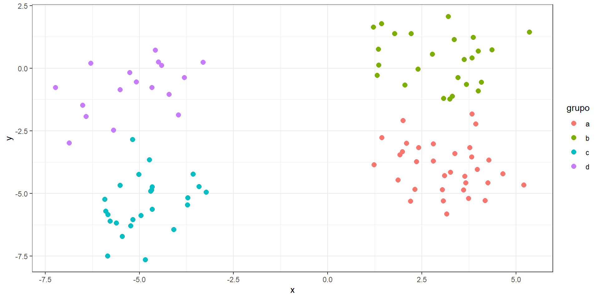Ejemplo: continuación
K-means clustering with 4 clusters of sizes 24, 25, 33, 18
Cluster means:
x y
1 -4.840884 -5.5399183
2 2.970914 0.3436634
3 3.119718 -3.9643128
4 -5.188403 -0.9255762
Clustering vector:
[1] 4 1 3 2 4 3 1 2 2 3 2 3 3 3 3 4 3 2 3 4 1 3 2 3 2 1 1 2 1 3 3 2 1 1 1 3 3
[38] 3 2 3 1 3 1 2 2 4 4 2 2 1 1 3 2 2 4 1 1 2 4 1 4 4 3 2 2 4 1 3 1 4 4 2 3 4
[75] 3 3 3 3 2 4 1 4 2 3 3 3 2 1 4 4 1 3 1 3 2 1 3 3 1 2
Within cluster sum of squares by cluster:
[1] 39.08613 55.16049 61.76208 42.71183
(between_SS / total_SS = 91.4 %)
Available components:
[1] "cluster" "centers" "totss" "withinss" "tot.withinss"
[6] "betweenss" "size" "iter" "ifault" Ejemplo: continuación
Ejemplo: continuación
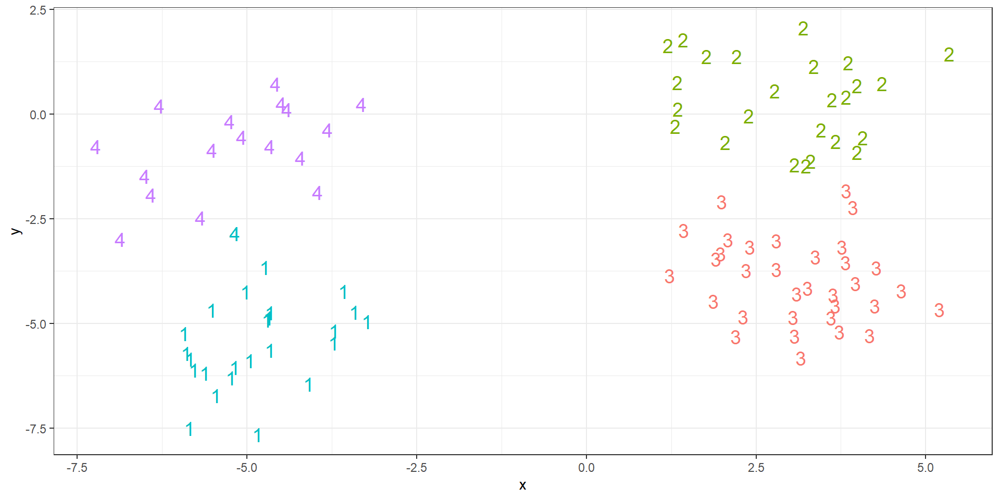Ejemplo: continuación
grupo real
cluster a b c d
1 0 0 24 0
2 0 25 0 0
3 33 0 0 0
4 0 0 1 17Ejemplo: continuación
datos <- datos %>% dplyr::select(x,y)
set.seed(411)
km_clusters_2 <- kmeans(x = datos, centers = 2, nstart = 50)
datos <- datos %>% mutate(cluster = km_clusters_2$cluster)
p1 <- ggplot(data = datos, aes(x = x, y = y, color = as.factor(cluster))) +
geom_point(size = 3) +
labs(title = "Kmeans con k=2") +
theme_bw() +
theme(legend.position = "none")
datos <- datos %>% dplyr::select(x, y)
km_clusters_6 <- kmeans(x = datos, centers = 6, nstart = 50)
datos <- datos %>% mutate(cluster = km_clusters_6$cluster)
p2 <- ggplot(data = datos, aes(x = x, y = y, color = as.factor(cluster))) +
geom_point(size = 3) +
labs(title = "Kmeans con k=6") +
theme_bw() +
theme(legend.position = "none")Ejemplo: continuación
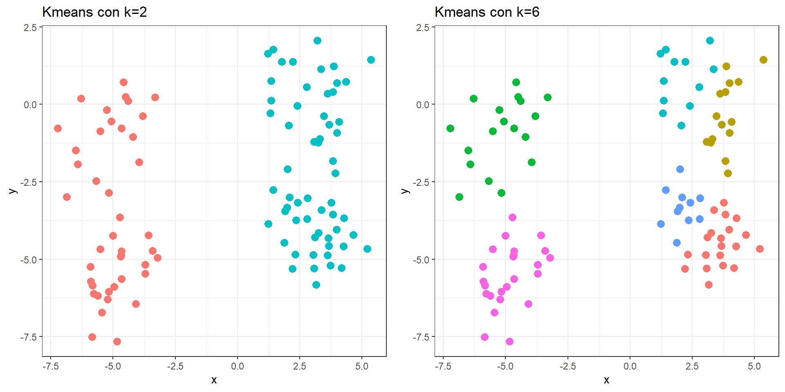Agrupamiento jerárquico
Agrupamiento jerárquico o Hierarchical clustering es una alternativa no requiere que se pre-especifique el número de clusters. Los métodos que engloba el hierarchical clustering se subdividen en dos tipos dependiendo de la estrategia seguida para crear los grupos:
Agglomerative clustering (bottom-up): el agrupamiento se inicia en la base del árbol, donde cada observación forma un cluster individual. Los clusters se van combinado a medida que la estructura crece hasta converger en una única “rama” central.
Divisive clustering (top-down): es la estrategia opuesta al agglomerative clustering, se inicia con todas las observaciones contenidas en un mismo cluster y se suceden divisiones hasta que cada observación forma un cluster individual.
En ambos casos, los resultados pueden representarse de forma muy intuitiva en una estructura de árbol llamada dendrograma.
Agglomerative
La estructura resultante de un agglomerative hierarchical clustering se obtiene mediante un algoritmo sencillo.
El proceso se inicia considerando cada una de las observaciones como un cluster individual, formando así la base del dendrograma (hojas).
Se inicia un proceso iterativo hasta que todas las observaciones pertenecen a un único cluster:
Se calcula la distancia entre cada posible par de los \(n\) clusters. El investigador debe determinar el tipo de medida emplea para cuantificar la similitud entre observaciones o grupos (distancia y linkage).
Los dos clusters más similares se fusionan, de forma que quedan \(n-1\) clusters.
Determinar dónde cortar la estructura de árbol generada (dendrograma).
Figura H.C. agglomerative
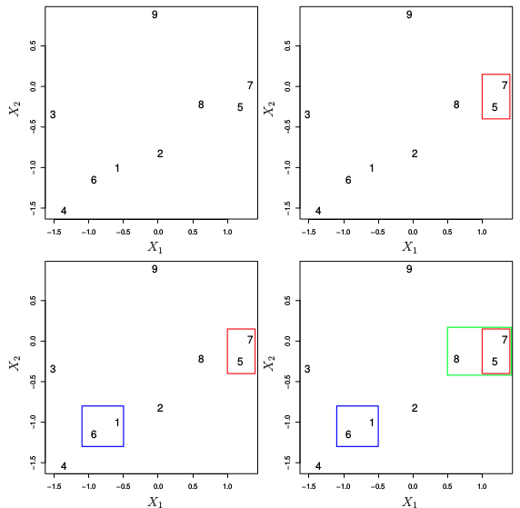Agglomerative: continuación
Para que el proceso de agrupamiento pueda llevarse a cabo tal como indica el algoritmo anterior, es necesario definir cómo se cuantifica la similitud entre dos clusters. Es decir, se tiene que extender el concepto de distancia entre pares de observaciones para que sea aplicable a pares de grupos, cada uno formado por varias observaciones. A este proceso se le conoce como linkage. A continuación, se describen los tipos de linkage más empleados y sus definiciones.
Complete or Maximum: Se calcula la distancia entre todos los posibles pares formados por una observación del cluster A y una del cluster B. La mayor de todas ellas se selecciona como la distancia entre los dos clusters. Se trata de la medida más conservadora (maximal intercluster dissimilarity).
Single or Minimum: Se calcula la distancia entre todos los posibles pares formados por una observación del cluster A y una del cluster B. La menor de todas ellas se selecciona como la distancia entre los dos clusters. Se trata de la medida menos conservadora (minimal intercluster dissimilarity).
Average: Se calcula la distancia entre todos los posibles pares formados por una observación del cluster A y una del cluster B. El valor promedio de todas ellas se selecciona como la distancia entre los dos clusters (mean intercluster dissimilarity).
Agglomerative: continuación
Centroid: Se calcula el centroide de cada uno de los clusters y se selecciona la distancia entre ellos como la distancia entre los dos clusters.
Ward: Se trata de un método general. La selección del par de clusters que se combinan en cada paso del agglomerative hierarchical clustering se basa en el valor óptimo de una función objetivo, pudiendo ser esta última cualquier función definida por el analista. El conocido método Ward’s minimum variance es un caso particular en el que el objetivo es minimizar la suma total de varianza intra-cluster.
Los métodos de linkage complete, average y Ward’s minimum variance suelen ser los preferidos por los analistas debido a que generan dendrogramas más compensados. Sin embargo, no se puede determinar que uno sea mejor que otro, ya que depende del caso de estudio en cuestión.
Divisive
El algoritmo más conocido de divisive hierarchical clustering es DIANA (DIvisive ANAlysis Clustering). Este algoritmo se inicia con un único cluster que contiene todas las observaciones, a continuación, se van sucediendo divisiones hasta que cada observación forma un cluster independiente. En cada iteración, se selecciona el cluster con mayor diámetro, entendiendo por diámetro de un cluster la mayor de las diferencias entre dos de sus observaciones.
Una vez seleccionado el cluster, se identifica la observación más dispar, que es aquella con mayor distancia promedio respecto al resto de observaciones que forman el cluster, esta observación inicia el nuevo cluster. Se reasignan las observaciones en función de si están más próximas al nuevo cluster o al resto de la partición, dividiendo así el cluster seleccionado en dos nuevos clusters.
Divisive: continuación
Todas las n observaciones forman un único cluster.
Repetir hasta que hayan n clusters:
- Calcular para cada cluster la mayor de las distancias entre pares de observaciones (diámetro del cluster).
- Seleccionar el cluster con mayor diámetro.
- Calcular la distancia media de cada observación respecto a las demás.
- La observación más distante inicia un nuevo cluster.
- Se reasignan las observaciones restantes al nuevo cluster o al viejo dependiendo de cual está más próximo.
A diferencia del clustering aglomerativo, en el que hay que elegir un tipo de distancia y un método de linkage, en el clustering divisivo sólo hay que elegir la distancia.
Dendograma
Para ilustrar cómo se interpreta un dendograma, se simula un set de datos y se somete a un proceso de hierarchical clustering.
Supongamos que se dispone de 45 observaciones en un espacio de dos dimensiones, que pertenecen a 3 grupos. Aunque se ha coloreado de forma distinta cada uno de los grupos, se va a suponer que se desconoce esta información y que se desea aplicar el método de hierarchical clustering para intentar reconocer los grupos.
Dendograma: continuación
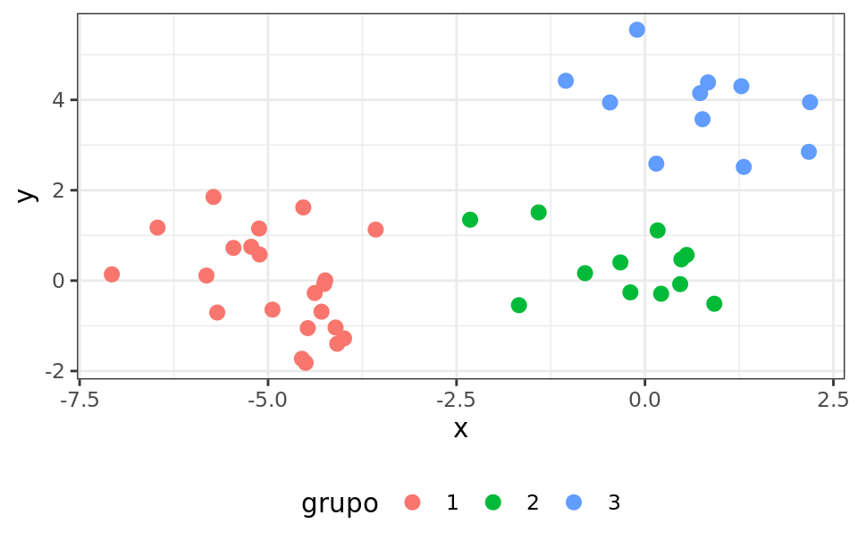Dendograma: continuación
Al aplicar hierarchical clustering, empleando como medida de similitud la distancia euclídea y linkage complete, se obtiene el siguiente dendrograma. Como los datos se han simulado en aproximamdamente la misma escala, no es necesario estandarizarlos, de no ser así, sí se tendrían que estandarizar.
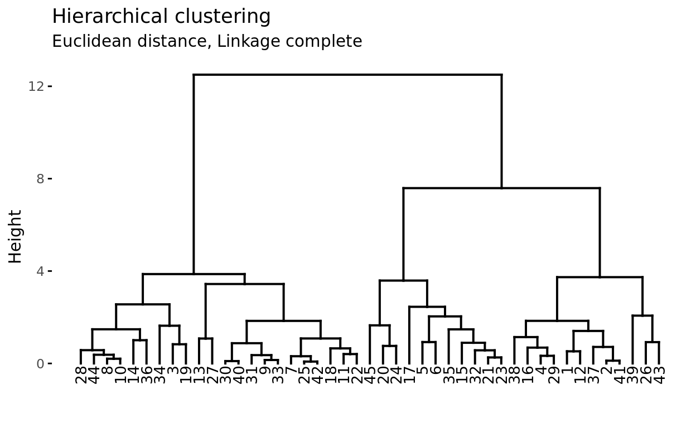Verificación del árbol resultante
Una vez creado el dendrograma, hay que evaluar hasta qué punto su estructura refleja las distancias originales entre observaciones. Una forma de hacerlo es empleando el coeficiente de correlación entre las distancias cophenetic del dendrograma (altura de los nodos) y la matriz de distancias original.
Cuanto más cercano es el valor a 1, mejor refleja el dendrograma la verdadera similitud entre las observaciones. Valores superiores a 0.75 suelen considerarse como buenos.
Ejemplo
data(USArrests)
datos <- scale(USArrests)
mat_dist <- dist(x = datos, method = "euclidean")
hc_euclidiana_complete <- hclust(d = mat_dist, method = "complete")
hc_euclidiana_average <- hclust(d = mat_dist, method = "average")
cor(x = mat_dist, cophenetic(hc_euclidiana_complete))[1] 0.6979437[1] 0.7180382Para estos datos, el método de linkage average consigue representar un poco mejor la similitud entre observaciones.
Corte del árbol
Además de representar en un dendrograma la similitud entre observaciones, se tiene que poder identificar el número de clusters creados y qué observaciones forman parte de cada uno. Si se realiza un corte horizontal a una determinada altura del dendrograma, el número de ramas que sobrepasan (en sentido ascendente) dicho corte se corresponde con el número de clusters.
library(factoextra)
datos <- USArrests
datos <- scale(datos)
set.seed(411)
hc_euclidiana_completo <- hclust(d = dist(x = datos, method = "euclidean"),
method = "complete")
dendograma1<-fviz_dend(x = hc_euclidiana_completo, k = 2, cex = 0.6) +
geom_hline(yintercept = 5.5, linetype = "dashed") +
labs(title = "Herarchical clustering",
subtitle = "Distancia euclídea, Linkage complete, K=2")Corte del árbol: continuación
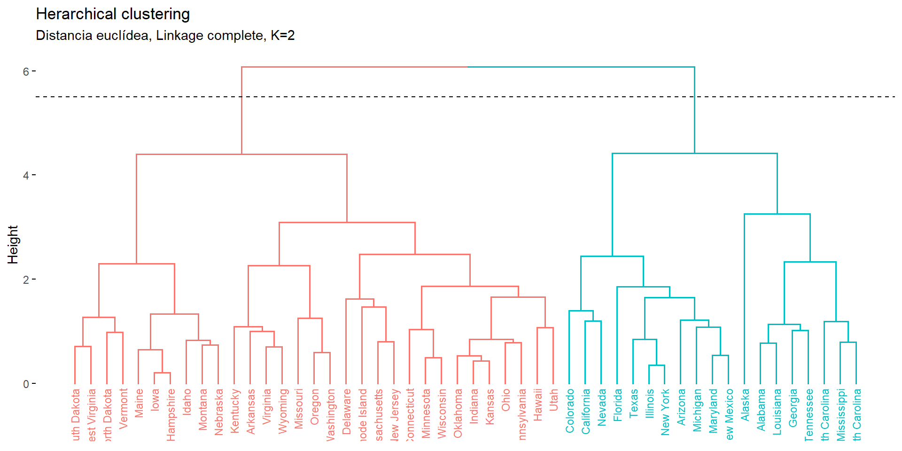Corte del árbol: continuación
Corte del árbol: continuación
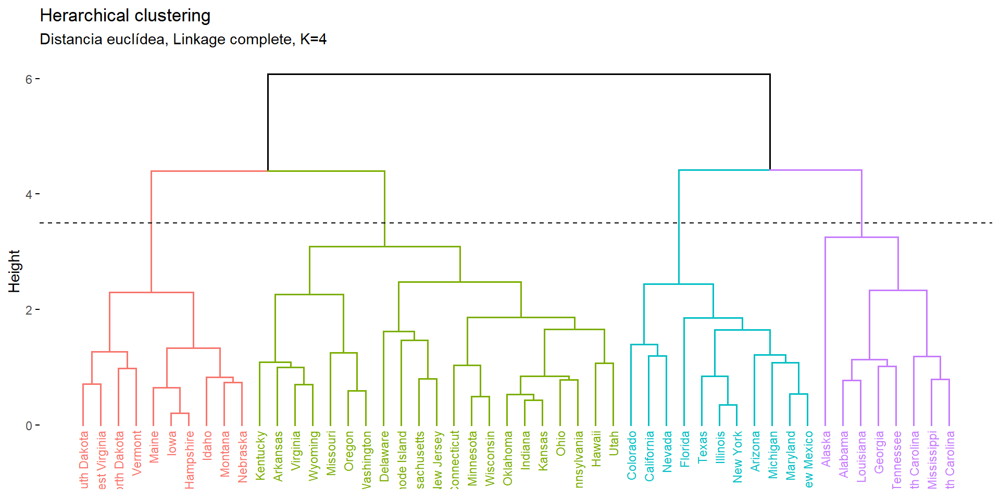Corte del árbol: continuación
Dos propiedades adicionales se derivan de la forma en que se generan los clusters en el método de hierarchical clustering:
Dada la longitud variable de las ramas, siempre existe un intervalo de altura para el que cualquier corte da lugar al mismo número de clusters.
Con un solo dendrograma se dispone de la flexibilidad para generar cualquier número de clusters desde 1 a \(n\). La selección del número óptimo puede valorarse de forma visual, tratando de identificar las ramas principales en base a la altura a la que ocurren las uniones.
¿Qué veremos la próxima semana?
- Certamen #2
¿Que deben preparar para la próxima semana?
- Estudiar para el certamen
IND 163 - Semana 9